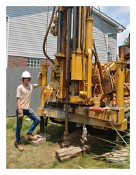
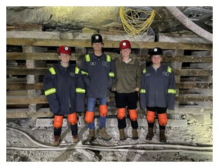
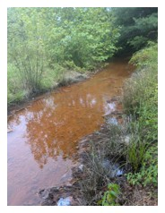
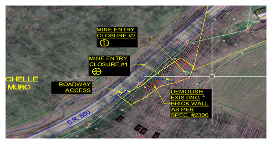
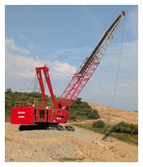
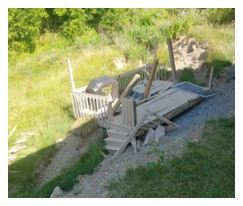
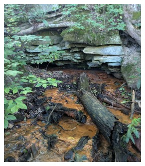

Abandoned Mine Land Engineering
During my internship with the Ohio Department of Natural Resources, I supported the Abandoned Mine Land program through field work, site investigation, AutoCAD plan development, and engineering documentation for reclamation projects across eastern Ohio.


Engineering starts with understanding the site
The Abandoned Mine Land program addresses hazards and environmental problems left by historic mining. My internship combined office-based design work with regular field exposure, which showed me how access, terrain, safety, drainage, environmental conditions, and construction methods influence what is practical.



Brick Church Mine Portal Closures
The problem
The site contained two abandoned mine openings that presented public-safety concerns, with one opening also associated with acid mine drainage. The project needed an appropriate closure concept while accounting for the actual site, drainage, access, topography, and whether the opening could be used by bats.
Because I was early in my engineering education and new to abandoned-mine reclamation, I reviewed similar ODNR projects and worked with experienced coworkers and my manager to understand proven closure methods before adapting those approaches to this specific location.
Turning field information into an early project plan
Field Data
Used site observations, measurements, opening conditions, and contour information.
Mapping
Combined aerial imagery, contours, and existing-condition information.
AutoCAD
Developed early plan views and closure details for the Brick Church site.
Specifications
Adapted content from previous specification packages to fit the site-specific project needs.
Environmental Constraints
Accounted for AMD drainage and potential bat use of the opening.
Constructability
Considered site access, staging, terrain, and how work could actually be performed.
From site conditions to AutoCAD

A proven closure approach still had to fit the actual site
Drainage
One opening had acid mine drainage, so the closure concept had to account for continuing water movement rather than simply sealing the opening without consideration of flow.
Bat habitat
Potential bat use affected whether an opening could be fully closed or required a closure approach that preserved appropriate access.
Topography & access
The plan had to reflect the terrain and whether construction equipment and personnel could realistically reach and work around the site.
Construction communication
The drawings and specifications needed to clearly communicate the work to future reviewers and, eventually, contractors.
Seeing how designs connect to real construction
Beyond Brick Church, I worked around engineers, surveyors, inspectors, environmental specialists, drillers, and other field personnel. I was exposed to drilling, mine investigations, acid-mine-drainage work, reclamation sites, and mine safety. That experience made construction access, site constraints, and field practicality much more concrete than they had been in the classroom.



Establishing the foundation for a project that continued after my internship
The Brick Church project was not complete when my internship ended. My work established an initial design direction, AutoCAD plan foundation, and project-specific specification content that still required formal engineering review, revision, and development before bidding.